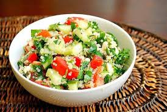

RECETAS ECOLÓGICAS
ENSALADA DE QUINOA Y VEGETALES
Ingredientes:
- 1 taza de quinoa orgánica
- 2 tazas de agua
- 1 pepino orgánico, cortado en cubos
- 1 pimiento rojo orgánico, cortado en tiras
- 1 zanahoria orgánica, rallada
- 1 aguacate orgánico, cortado en rodajas
- 1 puñado de hojas de espinaca orgánica
- Jugo de limón orgánico, al gusto
- Sal y pimienta negra, al gusto
Instrucciones:
-

En un tazón grande, combina la quinoa cocida, el pepino, el pimiento rojo, la zanahoria,
el aguacate y las hojas de espinaca.
- Lava la quinoa bajo agua fría para eliminar el sabor amargo.
- En una olla, cocina la quinoa con el agua a fuego medio durante 15-20 minutos o hasta
que esté tierna.
- Deja enfriar la quinoa cocida.
- Exprime jugo de limón sobre la ensalada y sazona con sal y pimienta al gusto.
- Mezcla bien todos los ingredientes y sirve la ensalada de quinoa y vegetales en platos
individuales.
¡Disfruta de esta deliciosa ensalada ecológica como plato principal o acompañamiento! Puedes
agregar otros ingredientes frescos y orgánicos según tu preferencia.
ENSALADA DE PASTA INTEGRAL
Ingredientes:
- 250 gr. de pasta integral
- 100 gr. de olivas verdes
- 100 gr. de olivas negras
- Un puñado de hojas de rúcula ecológica
- 50 gr de queso feta
- Sal
- Pimienta
- Aceite de oliva
- Unas gotas de limón
Preparación:
- Para preparar esta receta ecológica, la pasta debe ser integral, la forma es
indiferente, sirven corbatas, macarrones, etc. Los fideos deben cocerse en
abundante agua hirviendo con algo de sal, siguiendo las instrucciones que
indica el paquete. Una vez cocidos, se cuelan y se reservan, ya que deben
estar a temperatura ambiente para preparar la ensalada.
- La rúcula se lava muy bien (elegir una que proceda de la agricultura ecológica)
y el queso se corta en trozos del tamaño de un bocado.
- Al adquirir las aceitunas, comprobar que son de cultivo eco, en cuanto al tipo,
aliño y a que sean con o sin hueso, dependerá del gusto de los comensales.
- Finalmente y para culminar esta receta ecológica, se mezclan en un bol todos los
ingredientes, se salpimienta, se echa un chorro de aceite de oliva y unas gotas
de limón y se sirve.
TORTITAS NATURALES
Ingredientes:
- 1 cucharada de azúcar
- 8 gr. de levadura
- 1 pizca de sal
- 200 ml de leche
- 1 huevo
- 1 cucharadita de mantequilla
Instrucciones:
-
En un tazón grande, combina la quinoa cocida, el pepino, el pimiento rojo, la zanahoria,
el aguacate y las hojas de espinaca.
- Lava la quinoa bajo agua fría para eliminar el sabor amargo.
- En una olla, cocina la quinoa con el agua a fuego medio durante 15-20 minutos o hasta
que esté tierna.
- Deja enfriar la quinoa cocida.
- Exprime jugo de limón sobre la ensalada y sazona con sal y pimienta al gusto.
- Mezcla bien todos los ingredientes y sirve la ensalada de quinoa y vegetales en platos
individuales.